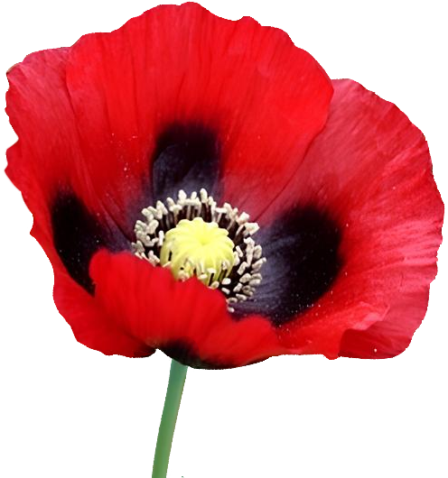

. . .
DRUG

A TYPE OF
DRUG
Narcotics is a word derived from the Greek word nark̄ (to remove
sensations) and has properties that induce dependence and abuse along
with specific pharmacological effects (mental paralysis, pain, relief,
and indulgence), and when misused or abused, serious health and social
harm occurs.
DATE :
LOC :
24 / JUN / 2024
Supreme Prosecutors' Office 157,
Banpo-daero, Seocho-gu, Seoul,
Republic of Korea
No.
Total
Qty (g)
Item
#1
3,970
천연 마약
01
163,999
양귀비
양귀비 열매에서 즙을 추출하여 이를 정제하여 고체로 만들면
아편(Opium)이 되는데, 국내에서의 양귀비 재배는 아편 추출을 통한 투약
목적보다는 주로 농어촌 및산간지역에서 가정상비약, 동물치료 목적이나
관상용으로 재배하고 있는 실정이다.
02
아편
아편(Opium, 阿片)은 양귀비의 덜 익은 열매에서 채취되는 마약의
제조방식에 따라 생아편, 의약용아편, 흡연용아편으로 구분된다.
생아편 : 덜 여문 양귀비의 열매에 낸상처에서 유출되는 유액을 채집하고
이를 건조시켜 덩어리로 만든것, 정제되지 않은 시커먼 덩어리이며
모르핀등 마약성 성분과 함께 수지(resin), 양귀비 껍질 조각 등이
함유되어 있어, 제약용으로써 합법적으로 생산되는 아편은 대부분 감기약용
코데인 합성에 사용한다.
의약용 아편(아편말) : 고체상태 아편의 모르핀 함유량을 10%로 조절하여
의료용으로 사용하며, 공식적으로 약전(의약품 제조서)에 기재
되어있었으나, 현재는 삭제되었다.
흡연용 아편 : 생아편을 물에 녹여 농축하여 가열하면 아편 속의 모르핀
성분이 열 분해되어 이를 액기스로 만든 것, 옛날의 아편 중독자들은
특수한 전용 곰방대에 한 덩어리 얹은 후 작은 호롱불로 기화해 흡연한다.
02
아편
1,362.07
디아세틸모르핀(diacetylmorphine), 즉 헤로인(heroin)은 양귀비의
열매에서 채취한 생아편에 소석회, 물, 염화 암모니아 등을 첨가하여 혼합,
침전, 여과, 가열의 과정을 거친 후 모르핀 염기에 무수초산, 활성탄,
염산, 에테 르등을 화학 처리하여 제조한다. 아세틸화합물인 헤로인은
냄새가 없는 백색, 연갈색, 암갈색의 분말로서, 긴장이나 분노, 공포를
억제하여 행복감과 도취감을 주는 중추신경 억제제의 일종임 모르핀을
원료로 하기에 일반적인 약리작용은 모르핀과 유사하나, 그 중독성은
모르핀의 10배에 달한다.
04
11,671.79
코카인
코카인은 약효가 빠르고 강력한 도취감을 일으키며, 흡입 또는 투약 시
벌레들이 피부를 기어다니는 느낌의 환각에 빠진다. 과다한 양을 흡입하면
맥박이 빨라지고 호흡이 불규칙해지며 열과 경련이 일어난다. 보다 심할
때에는 호흡곤란으로 투약자를 사망에 이르게 한다.
05
3,119.35
크랙
코카인염에 탄산나트륨, 베이킹파우더 등을 섞어 가열한 후 냉각시켜 고체
상태로 제조한다. 코카인보다 약효가 몇 배 강하고 중독성이 높으나,
저렴하다는 장점으로 인해 미국 사회 전체에널리퍼졌다. 흡연할 경우 뇌의
도파민 분비량이 급작스럽게 올라가며 자신감과 고양감을 느끼는데 이
과정이 5~10분정도로 매우 짧아 지속적으로 다른 흡연수단을 찾게 된다.
06
3,119.35
펜타닐
펜타닐은 마약성 진통제의 일종으로 극심한 고통을 겪는 말기암환자,
복합부위통증 증후군(CRPS) 환자, 대형 수술 환자용 진통제로 사용되는
합성마약이다. 그 위력은 모르핀의 약 200배, 헤로인의 약 100배에 달하며
완전치사량(LD100)도 2mg에 불과하여 극미량이라도 잘못 흡입할 경우
인체에 치명적인 결과를 가져올 수 있다.
#2
19,556
향정신성의약품
01
메트암페타민
메트암페타민은 의존성이 매우 높아 빠르게 중독되고 중독된 사람은 극심한
금단증상을 겪으며, 투약 시 중추신경계가 파괴되어 다양한 증상의
합병증을 유발하고 과다투약 시 사망에 이를 수 있음
79,469.48
02
MDMA
MDMA는 전 세계적으로 확산되고 있는 대표적인 환각성 향정신성의약품이며,
‘엑스터시(Ecstacy)’라는 명칭으로 더 잘 알려졌다. 복용 시 신체접촉
욕구가 강하게 일어나기 때문에 ‘포옹마약(hugdrug)’으로 불릴 뿐만
아니라, 복용 후 20~60분 정도 경과하면 입이 마르고 동공이 확대되는 등
극도의 흥분감을 일으키며, 3~4시간 약효가 지속되고, 과다 복용 시 불안,
초조, 환각, 환청, 구토, 혈압상승 등 부작용을 초래하는 한편, 심할 경우
심장마비를 일으켜 사망에 이르기도 한다.
42,179.04
03
2,333.03
LSD
엘에스디(LSD, lysergic acid diethylamide)는 1938년 스위스 화학자
앨버트 호프만(Albert Hofmann)이 호밀 이삭에서 발생하는 맥각병에서
착안하여 최초 합성한 환각제로, 무색무취의 백색 분말형태이다.
04
79,469.48
합성대마
화학 물질들을 인공적으로 합성하여 강력한 환각 효과를 내는
향정신성의약품으로 건조된 식물의 잎에 흡착시켜 마치 대마초와 비슷한
모습을 보이며, 연기를 흡연하거나 전자담배 카트리지를 제작하여 흡연하는
방식 또한 대마초 흡연 방식과 유사하나, 천연 마약류인 대마의 주성분인
THC는 화학적으로 완전히 다른 마약류이다. *THC (tetrahydrocannabinol)
05
42,579.33
케타민
케타민은 임상용 또는 동물용 마취제로 사용되고, 오남용 시 신체적·정신적
의존성과 금단 증상을 일으킨다. 유흥업소나 클럽에서 ‘데이트 강간
약물(date-rape drug)’로 불린다.
06
210,811.93
야바
야바는 메트암페타민(30%), 카페인(60%), 코데인(10%) 등 각종 환각성분을
혼합하여 정제나 캡슐형태로 제조한 향정신성의약품으로, 태국어로 ‘미친
약’ 이라는 뜻이다.
06
79,469.48
GHB
GHB는 속칭 ‘물뽕’, ‘데이트 강간 약물(date-rape drug)’ 등으로 불리며,
클럽 등지에서 성범죄에 악용되고 있다.
#3
대마
4,085
01
대마초
흥분과 억제 작용을 동시에 지니고 있으며, 일반적으로 환각제로 분류된다.
적은 양을 사용하였을 때에는 초조감, 풍족감, 이완감을 수반한 꿈꾸는
듯한 느낌이나 공복감 등을 일으키고, 시각·후각·촉각·미각 등의 감각을
오묘하게 변화시킨다.
114,154.70
02
해시시
대마초로부터 채취한 대마수지를 건조 후 압착시켜 여러 가지 형태로
제조한 것으로, 갈색·연갈색·암갈색·흑색 등 덩어리의 형태이며, 약 10%의
THC를 함유하여 대마초보다 8배∼10배 가량 작용성이 강하다.
3,183.59
Total Count :
27,611
Card# :
Auth Code :
Membership :
Arrest Point :
Availaeble Point :
**** *480 2**0
056590
Not Allowed
3,422
24,198
World Health Organization (WHO)2 defines 'drugs' as follows
①The desire for drug use is strong enough to force (dependence),
②The amount of drugs used tends to increase (tolerant),
③If you stop using it, you will experience symptoms that are difficult
to endure all over your body (withdrawal symptoms),
④a drug that is not limited to individuals but harms society
- 06. 2024. 03 : 02
Supreme Prosecutors’ Office

Inquires about drug addiction treatment, call now 1342
